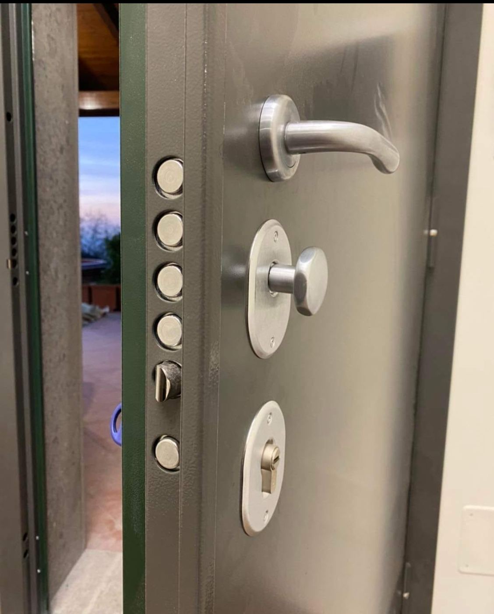
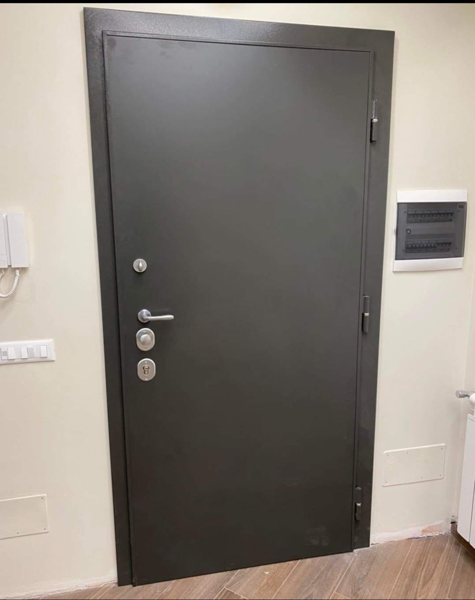
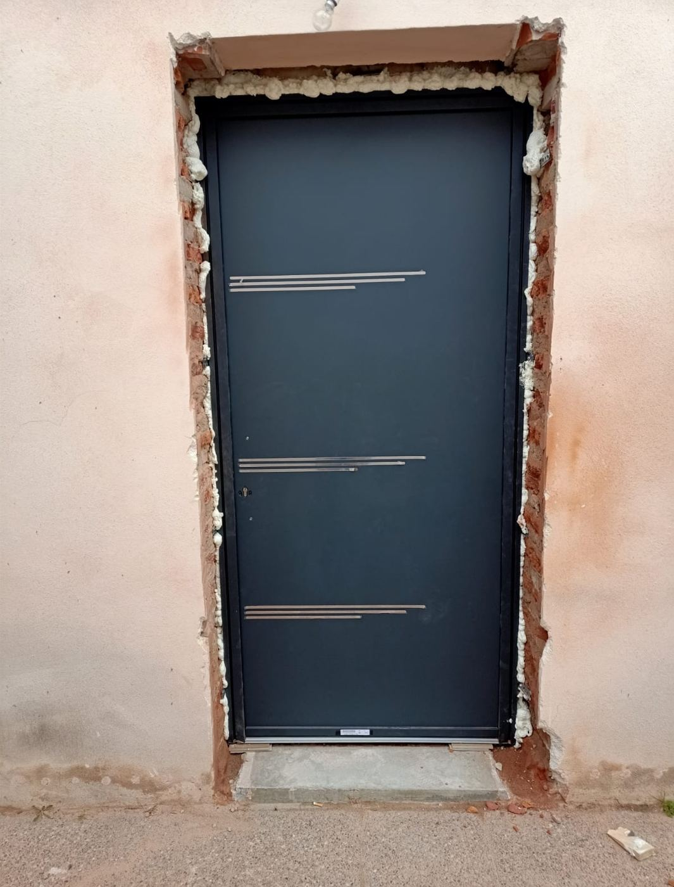
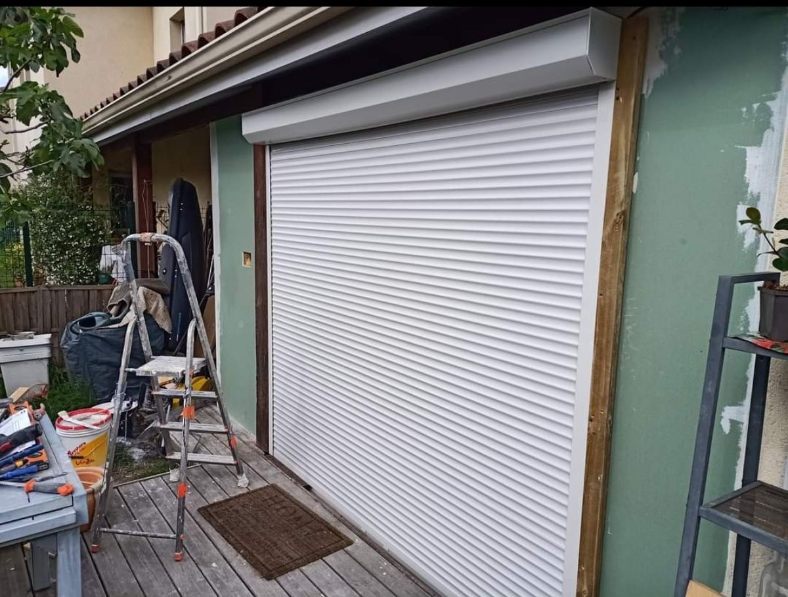
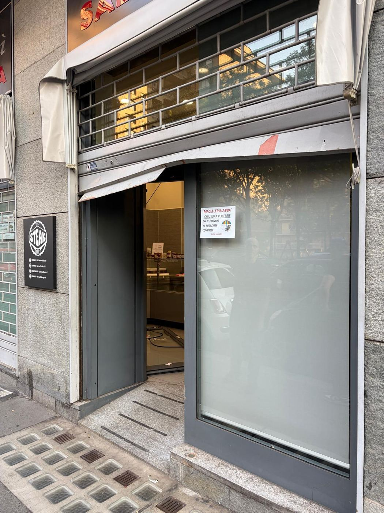
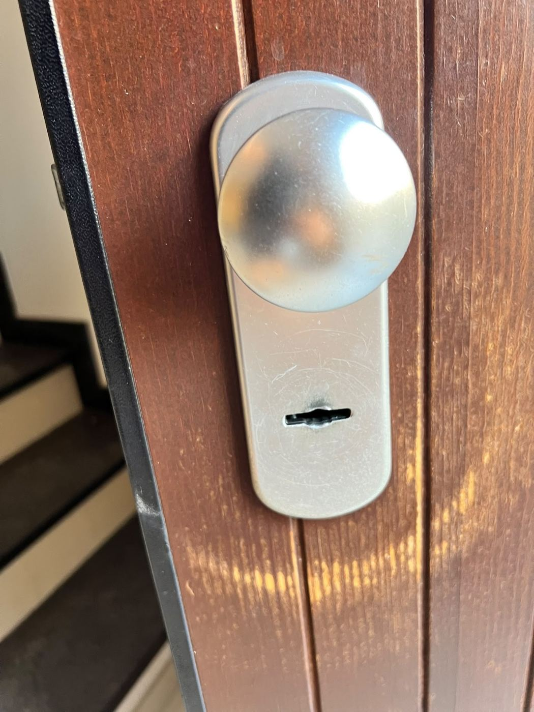
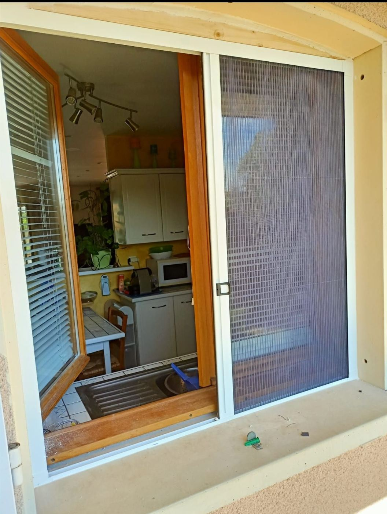

🔓
Apertura porte
Aperture di qualsiasi tipo di serratura, senza danni alla porta. Interventi rapidi anche di notte e nei festivi.

Apertura porte senza danni, serrature, porte blindate, tapparelle e serrande. Interventi rapidi a Torino, giorno e notte, eseguiti direttamente dal titolare.
Dal pronto intervento quando resti chiuso fuori ai lavori su misura: un unico artigiano di riferimento.
Aperture di qualsiasi tipo di serratura, senza danni alla porta. Interventi rapidi anche di notte e nei festivi.
Sostituzione serrature e cilindri, duplicazione chiavi, cambio urgente su porte blindate. Sicurezza garantita.
Installazione di porte blindate, sicurezza e design su misura per casa e ufficio.
Installazione, riparazione e motorizzazione di tapparelle.
Installazione, riparazione e automazione di serrande per negozi e garage.
Cancelli, inferriate, ringhiere e strutture in ferro su misura.
Porte, serrature, tapparelle e serrande installate a Torino.






Quando chiami, risponde e interviene sempre il titolare: nessun call center, nessun intermediario. Il prezzo viene concordato al telefono prima di partire, e viene rispettato.
Lavoro per privati, negozi e condomini di Torino, con materiali di qualità e la sicurezza al primo posto.
★★★★★“Sono rimasto chiuso fuori dal mio negozio ed è intervenuto in tempi molto brevi. Grazie mille Sergio!!”
★★★★★“Rapido veloce e onesto ho avuto un problema sulla serratura della serranda mi ha salvata la giornata di lavoro”
★★★★★“Ottima esperienza sono rimasta chiusa fuori casa ho chiamato ed e arrivato nell'arco dì poco tempo professionale e onesto”
★★★★★“l’ho chiamato per installare le tapparelle nella mia nuova casa, mi ha fatto un ottimo prezzo ed è stato super disponibile!!”
★★★★★“Velocità di risposta via Whatsapp sorprendente, nonostante fosse Domenica. Prezzo pattuito al telefono, per cambio urgente serratura di una porta blindata, rispettato perfettamente. Ottima manualità ed estrema cortesia. Superconsigliato.”
Semplice e veloce, anche nelle emergenze.
Telefono o WhatsApp, 24 ore su 24, 7 giorni su 7.
Ti dico subito quanto costa, senza sorprese.
Arrivo in poco tempo e risolvo, senza danni.
Ti consiglio come proteggere al meglio casa o negozio.
Sì, il servizio è attivo 24 ore su 24, 7 giorni su 7, festivi compresi.
Il prezzo viene concordato al telefono prima dell'intervento, così sai esattamente quanto spendi.
No: le aperture vengono eseguite senza danni, su qualsiasi tipo di serratura.
Sì, sopralluogo, consulenza e preventivo sono gratuiti.
Certo: serrande, serrature, porte e lavori in ferro per attività commerciali e condomini.
Corso Luigi Einaudi, 33, 10141 Torino TO
| Lunedì | Aperto 24 ore su 24 |
| Martedì | Aperto 24 ore su 24 |
| Mercoledì | Aperto 24 ore su 24 |
| Giovedì | Aperto 24 ore su 24 |
| Venerdì | Aperto 24 ore su 24 |
| Sabato | Aperto 24 ore su 24 |
| Domenica | Aperto 24 ore su 24 |